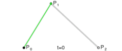
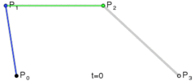

1. 分层绘制
我们的图片编辑功能器在交互方案上有一个很重要的点：涂鸦，马赛克，贴纸等操作，都是在固定的层级上绘制的，层级高的会遮盖层级低的，也就是说，画笔画出的线只能画在涂鸦那一层，而不能画到贴纸上。我们划分的层级从低到高依次是：
- 原图/滤镜
- 马赛克
- 涂鸦
- 贴纸
1.1 如何实现分层
那么我们如何使用OpenGL来实现分层绘制呢？我们继承GLSurfaceView定义一个自己的ImgGLSurface类，并且自己实现Renderer接口，接下来我们可以定义多个子Renderer分别来负责绘制不同的图层，然后在onDrawFrame方法中，按照层级从低到高依次调用这几个Renderer的draw方法绘制对应图层即可。
ImgGLSurfaceView的类结构如下：
1.2 OpenGL颜色混合
由于我们的图像是多个图层叠加的，所以我们需要注意在图层之间的颜色混合问题。什么是颜色混合呢？就是把两个图层的颜色根据某种规则混合起来得到一个新的颜色。
如果我们不使用颜色混合，我们就无法绘制一个透明图片。比如说，在我们的图片编辑器中，所有贴纸图片资源四周的像素都是透明的，当我们把渲染贴纸时会发现，透明像素部分变成了黑色，这就是没有开启颜色混合导致的。
在OpenGL中，通过以下代码开启颜色混合：
1 | GLES20.glEnable(GLES20.GL_BLEND) |
除此之外，还需要设置混合的方式，
1 | GLES20.glBlendFunc(GL10.GL_ONE, GL10.GL_ONE_MINUS_SRC_ALPHA); |
混合后的颜色可以这样理解：
1 | 混合后颜色 = 源颜色 * 源因子 + 目标颜色 * 目标因子 |
上面glBlendFunc中，第一个参数就是设置源因子，第二个参数就是设置目标因子。
OpenGL中提供了很多种混合因子的取值，设源和目标的颜色数组分别为 S=(sR, sG, sB, sA) 和 D=(dR, dG, dB, dA) ， OpenGL中提供的参数说明如下：
1 | GL_ZERO = (0, 0, 0, 0) |
我们上面示例中设置的GL10.GL_ONE, GL10.GL_ONE_MINUS_SRC_ALPHA这两个参数，达到的效果就是当前图片中透明的部分在混合显示为下面图层的像素，也就是说让下面图层透了出来，这就解决了我们之前的问题。
2. 画面矫正
在上一篇OpenGL基础中讲到的使用OpenGL绘制图片的例子中，我们会发现一个问题：图片是铺满全屏的，而屏幕的宽高比和图片本身的宽高比一般是不同的，所以就会出现画面拉伸的情况。为了让我们的图片能按照图片原比例显示，需要我们做一些处理矫正画面，常见的有两种方案：1.通过设置OpenGL的ViewPort实现 2.通过正交投影实现
2.1 设置ViewPort实现
之前我们讲过，ViewPort表示了OpenGL渲染画面的范围，那么我们就可以根据图片的宽高比计算出ViewPort的宽高，这样ViewPort的宽高比和图片的宽高比是一致的，就不会出现拉伸的问题了。代码示例如下：
1 | public void calc(int viewWidth, int viewHeight, int imgWidth, int imgHeight) { |
但是这个方法在我们的项目上有个问题：我们的图片编辑器是支持放大图片的，所以当我们放大图片时，超出ViewPort范围的部分是显示不出来的，当然我们也可以动态的更改ViewPort的大小，但这样做就复杂了不少，所以我们并没有采用这种方案。
2.2 正交投影实现
在介绍这个方案前，先简单讲一下OpenGL中的投影。
投影定义了一个可视空间，在可视空间之外的点最终都会被裁剪不会显示在屏幕上，我们可以通过投影矩阵来调整画面范围。OpenGL提供了以下两种类型的投影：
2.2.1 透视投影
可以看出，透视投影的效果和人眼看物体是一样的，具有近大远小的效果。
可视空间： 在透视投影中，近平面和远平面以及他们四边的连线构成的一个空间就是透视投影的可见空间，在这个空间之外的坐标将被裁剪掉。
由于透视投影的效果和人眼一样，所以一般用于3D渲染中。
2.2.2 正交投影
和透视投影不同的是，正交投影中相机的视线不是从一个点散发出的，而是一组平行线，所以他没有近大远小的效果。
可视空间: 正交投影除了近平面和远平面，还有上，下，左，右平面，这些平面组成的立方体构成了正交投影的可视空间，在这个空间之外的坐标将被裁剪掉。
2.2.3 投影矩阵
在OpenGL中，图形变换一般是通过矩阵实现的，我们可以在顶点着色器中，用矩阵乘我们的顶点坐标实现变换：
1 | gl_Position = u_Matrix * a_Position; |
在Android平台，android.opengl.Matrix这个类为我们提供了一些常见的矩阵变换方法，如平移，缩放，旋转，投影等。
我们可以通过orthoM这个方法来构建一个正交投影矩阵：
1 | /** |
在默认情况下，left，right是-1和1，top和bottom也是一样。
接下来举例说明如何利用正交投影来调整画面比例：
假设我们屏幕宽高为10801920，而我们的图片宽高是1000\540。此时我们需要图片宽度撑满屏幕，高度按图片原比例缩放，也就是说，缩放后的宽高是1080*540。
回到我们创建投影矩阵的orthoM方法，默认撑满屏幕情况下，left，right分别对应-1和1，这里我们宽度需要撑满屏幕，所以取默认值即可。而高度默认是1920缩放到540，缩小了3.55倍。
默认情况下，缩放比例是1：
1 | scale = 2/(top-bottom)=1 |
那么缩小3.55倍就是：
1 | scale= 2/(top-bottom)=1/3.55 |
由于top，bottom互为相反数，所以分别是3.55，-3.55。所以我们正交投影的参数为：
1 | Matrix.orthoM(mPrjMatrix, 0, -1, 1, 3.555556, -3.555556, 1, 2) |
接下来只要把矩阵传递给顶点着色器就可以实现画面比例矫正了。
3. 支持手势操作
我们的图片编辑器需要支持在编辑图片的过程中，能通过手势来平移，缩放图片，即单指拖动图片，双指缩放图片。
3.1 基本实现思路
在OpenGL中，图形变换一般都是使用矩阵来实现的，如平移，缩放，旋转，投影等，在Android平台提供了Matrix这个类封装了一些常用的矩阵变换。
基本实现思路如下：
- 声明TranslateMatrix和ScaleMatrix两个矩阵分别用来存储平移和缩放操作
- 在OnTouchEvent中识别出手势操作：平移或缩放，并计算出相应参数。
- 根据手势操作，使用Matrix中提供的方法对相应的矩阵进行矩阵运算
- 把我们所有的矩阵依次相乘得到一个最终矩阵，即包括平移矩阵，缩放矩阵，投影矩阵
- 由于我们有多个图层，多个Renderer，所以需要把最终矩阵传递给每个Renderer，然后每个Renderer再把这个矩阵传递到顶点着色器中和顶点相乘，这样当我们手势操作的时候每个图层就可以跟着一起变换了。
3.2 OpenGL中的矩阵变换
3.2.1 单位矩阵
单位矩阵是一个除了对角线以外都是0的N×N矩阵。在下式中可以看到，这种变换矩阵使一个向量完全不变：
3.2.2 常用矩阵
我们常用的矩阵主要是平移，缩放，旋转三种。
平移矩阵：
缩放矩阵：
旋转矩阵：
沿X轴旋转：
沿y轴旋转：
沿z轴旋转：
在Matrix中，也提供了相应的工具方法：
1 | /** |
3.2.3 变换顺序
在使用矩阵变换的时候，需要注意变换顺序，不同的变换顺序将产生不同的结果。示例如下：
先平移后缩放：

先缩放后平移：

当我们这样调用时：
1 | Matrix.translateM(mMatrix, 0, 0.5f, 0, 0); |
我们会发现实际效果是先缩放，然后旋转，然后平移，这和我们代码调用顺序是相反的，这是为什么呢？
以缩放矩阵为例，当我们调用Matrix.scaleM方法时，传入一个矩阵M，得到一个矩阵M2，这个M2是原矩阵M右乘缩放矩阵S得到的，所以当我们连续调用多个变换时，最后调用的矩阵被乘在了最右边，而我们用这个最终的矩阵去左乘我们的顶点坐标时，最右边的矩阵会最先被应用，这就是为什么实际变换顺序和代码调用顺序相反的原因了。
4. 离屏渲染
我们使用OpenGL进行渲染一般都是直接绘制在手机屏幕上的，那么可以在用户看不到的地方绘制吗？答案是可以的，OpenGL提供了帧缓冲对象也就是FrameBufferObject 以下简称FBO ,可以用来实现离屏渲染。
OpenGL 在渲染到系统窗口之前，都会将数据送到
FBO上，也就是说，FBO其实一直在默默的为我们服务。
所以，OpenGL 在一开始就创建了一个默认的 FBO。
其实在很多场景我们都需要利用FBO来做离屏渲染，比如：
保存图片编辑的最终结果：
在我们的图片编辑器中，点击完成按钮后我们需要生成一个编辑后的Bitmap，这里我们可以使用glReadPixels方法来读取当前OpenGL渲染的图像的像素信息，然后将这些信息存储到Bitmap里，但是这里会发现：我们得到的这个bitmap图像是上下颠倒的，这是因为android中屏幕和Bitmap的原点在左上角，而OpenGL纹理的原点在左下角。为了解决这个问题，我们需要绘制一个颠倒的图像然后再通过glReadPixels来读取信息，但是我们又不能让颠倒的图像绘制到屏幕上，所以我们就可以把颠倒的图像绘制到FBO上再去读取到Bitmap中。
保存渲染的中间结果：
有时我们需要用FBO来保存一些中间结果，比如我们的马赛克效果需要一个底图作为输入信息，但是我们的底图是可以加滤镜的，当底图切换滤镜的时候，马赛克的这个输入信息也需要随之变化，这里我们就需要把经过滤镜后的底图绘制到FBO中，然后再从FBO中读取出来作为马赛克效果的输入信息。
实现一些滤镜效果：
使用FBO也可以实现一些滤镜效果，比如视频里的灵魂出窍效果：https://www.jianshu.com/p/1a7741608083。
使用FBO代码示例：
1 | private void bindFB() { |
使用步骤如下：
- 创建FrameBuffer
- 生成一个纹理，并对这个纹理做些设置，这里和之前绘制图片的例子里一样
- 绑定FrameBuffer到当前的绘制环境上
- 将上面创建的纹理和FrameBuffer绑定
- 解绑当前纹理，避免后续无关的操作影响了纹理内容
- 绘制图像，这时所有的绘制操作都会绘制到FrameBuffer而不是屏幕了
- 解绑FrameBuffer
5. 滤镜
之前我们介绍过，在片段着色器中我们可以指定每个小片段的颜色值，所以很多滤镜效果其实基本都是在片段着色器上做文章的。
接下来我们看几个简单的滤镜效果实现：
原图：
反色滤镜：
1 | private static final String FRAGMENT_SHADER = |
反色滤镜很简单，就是用1减去原本的色值得到反色，效果如下：
灰色滤镜：
1 | private static final String FRAGMENT_SHADER = |
效果如下：

更多OpenGL实现的滤镜效果，我们可以参考著名的开源库GPUImg，里面有很多常用滤镜的实现：
GPUImage：https://github.com/cats-oss/android-gpuimage
GPUImage Plus: https://github.com/wysaid/android-gpuimage-plus
而我们的图片编辑器中的滤镜，则是由设计同学提供滤镜的对比度，饱和度，曝光等7个参数，然后我们在滤镜基类BaseFilter中的片段着色器去实现这7个参数，每个不同的滤镜设置不同的参数值就可以了。
滤镜参数如下(后面可能会有调整，仅做为示例)：
6. 涂鸦
6.1 基本实现步骤
实现涂鸦功能我们可以分为几个基本步骤：
- 在GLSurfaceView的OnTouchEvent中获得手指触摸的坐标
- 将获得的屏幕坐标转换为OpenGL的世界坐标
- 将这些点连线，渲染
看起来似乎很简单，但其实还有很多问题。
6.1.1 线宽问题
之前介绍过，OpenGL中有三种基本图元：点，线，三角形。当我们使用GL_LINES，GL_LINE_LOOP，GL_LINE_STRIP等绘制模式时，会发现不论我们怎么设置线宽，在大部分Android设备上线总是很细，这是因为OpenGL本身是一套软件接口，具体实现由硬件厂商决定，所以不同设备上支持的最大线宽是不一样的。经过试验发现：在很多Android设备上，线宽只能设置1~10这个范围，这可以说是很坑的问题了。
由于线宽问题，我们就不能直接用线图元来连接几个触摸点了，既然线不能用，那我们只能改用点图元或者三角形图元来自己拼接出一条线的效果，这样我们就能自由控制线宽了。
使用三角形来拼接成线的方案实现起来难度较高，所以我们采用点拼接成线的方案。但是由于我们的屏幕采集触摸点的频率有限，所以我们在OnTouchEvent回调中得到的点是稀疏的，无法直接拼接成线，这就需要我们手动在两个触摸点之间补点，代码示例如下：
1 | public void addPoint(float x, float y) { |
我们在两个点之间手动插入的点越多，拼接出的线锯齿就越小，效果就越好。由于我们采用点图元进行绘制，那么如果想要调整画线的线宽只需要修改每个点图元的大小即可，gl_PointSize这个着色器内建变量就可以用来指定点图元的大小：
1 | gl_PointSize = u_PointSize; |
6.1.2 笔触优化
进过上面的步骤我们虽然能画出曲线了，但是由于我们是使用点图元来绘制的，而在OpenGL中，点图元是正方形的，这就导致我们画出的线很不好看：
那么为了解决这个问题，我们需要把我们画笔的笔触从方形改为圆形，那么问题关键在于：在OpenGL中如何画一个圆点？
为了画出圆点，我们需要在片段着色器中进行裁剪：
1 | float dist = length(gl_PointCoord - vec2(0.5)); |
gl_PointCoord ：存储的是当前片段所在点图元的二维坐标。点的范围是 0.0 到 1.0。如果当前的图元不是一个点，那么从 gl_PointCoord 读出的值是未定义的。也就是说，gl_PointCoord这个变量能告诉我们当前片段在这个点图元中的相对位置。
接下来我们调用内建函数**length()**来获取当前片段到点图元中心点(0.5，0.5)的距离dist。
**smoothstep()**也是一个内建函数：传入三个参数 a,b, x,如果 x 小于等于 a,得到 0,如果 x 大于等于 b,得到 1,如果 a<x<b,则按照一定规则进行插值,如果 a 大于或者等于 b,则返回 undefine。
disicard是glsl中的一个关键字，表示抛弃当前片段。
当dist超过0.5的时候，表明当前片段已经超出了圆的范围，此时value的值为0，我们可以使用discard关键字将这个片段抛弃掉。
经过上面这段处理，我们画出的每个点就变成圆点了：
6.1.3 支持撤回
我们的图片编辑器是支持用户撤回画线的，要实现这个也比较简单。我们只需要将画线相关的信息封装到一个GLLine对象中，每产生一条画线，就生成一个GLLine对象并加到一个列表中，当绘制的时候，按照顺序依次绘制每一条线，当撤回的时候，从列表的尾部移除就可以了。
6.2 进一步优化思考
经过了上面的步骤，其实已经基本实现画笔的功能了。但是我们还有一些可以优化的地方。
6.2.1 让曲线更平滑
虽然我们已经手动补了很多的点，但是由于我们的补点方式是在两个触摸点构成的直线上补点的，所以我们的曲线在某些时候还是不够平滑。
如果想让曲线更加平滑，我们可以在补点的时候利用贝塞尔曲线公式来补。
一阶贝塞尔曲线：


二阶贝塞尔曲线：


三阶贝塞尔曲线：


我们以二阶贝塞尔曲线为例，可以看到共有P0，P1，P2三个点，其中P0代表起始点，P2代表终止点，P1代表控制点，用来控制曲线的形状。当这三个点确定后，就只有t这一个变量，t的取值范围从0到1，当t取不同值的时候，根据公式就能得到曲线上的一个点。三阶贝塞尔曲线也是类似，其中P1，P2作为控制点。
了解了贝塞尔曲线公式之后，我们就可以在补点的时候，每三个点或每四个点构成作为曲线的起始点，终止点和控制点，然后我们根据公式对t取不同的值求出曲线上的其他点补齐就可以了。
需要注意的是：t这个变量的取值如果是线性变化的，那么我们得到的点在曲线上的分布往往是两头稀疏中间密集，因此需要实现匀速贝塞尔曲线运动，具体可以参考这篇文章：https://www.cnblogs.com/didi/archive/2009/09/09/1563435.html
6.2.2 渲染性能优化
尽管OpenGL的绘制效率比较高，但是当我们画的线非常非常多的时候，在一些低端机上会出现画线操作反应变慢的问题。虽然这种场景比较极端，但是我们还是可以考虑一下优化的方案。
首先分析一下这种情况下性能下降的原因：
- 顶点数量太多：由于我们的线是通过点来拼接出来的，那么当我们画的线非常非常多的时候，所以顶点的数量也非常的多，当OpenGL需要处理的顶点数超过一定的值后渲染效率自然也就下降了。
- 重复绘制：我们在画线的时候，可能有些点或者区域重合了，其实不必再重复渲染了。
为了优化画线过多时的渲染效率，我们可以采取以下方法：
- 设定一个顶点数的极限值N，当顶点数超过N时，将当前整个涂鸦层渲染的内容画到FBO上得到一个纹理，当下次渲染的时候，这部分内容就不用逐个顶点绘制了，直接用之前得到的纹理绘制就可以了。
- 当用户退出涂鸦状态的时候，也把当前涂鸦层内容画到FBO上并存起来，当用户做一些和涂鸦无关的操作时，涂鸦这一层的内容并没有更新，所以直接用之前保存的纹理绘制即可。
总的来说，上面两个方法的核心思想就是利用FBO来保存我们绘制的中间结果，这个被我们保存起来的纹理起到了类似”缓存”的作用，减少了渲染时要处理的顶点数，因而能够提升性能。
7. 马赛克
我们编辑器里的马赛克功能其实就是实现一种带有马赛克涂抹效果的画笔，用户可以使用马赛克画笔去遮挡一些图片上不想让别人看到的部分。
其实，马赛克功能和涂鸦功能有很多共性，他们都是实现一种画笔，只不过涂鸦功能的画笔画出的纯色的曲线，而马赛克功能的画笔画出的则是一些使原图模糊的特色效果，如马赛克效果，毛玻璃效果等，因此之前提到的涂鸦画笔上的一些实现方案，优化方案也都可以直接用在马赛克画笔上。
7.1 马赛克效果原理
马赛克效果原理：其实就是让图片中一个指定大小的区域用同一个颜色表示。可以看做是大幅降低图片分辨率的效果。
马赛克效果示例如下(效果图取自网络)：
矩形马赛克：
六边形马赛克：
7.2 马赛克滤镜
在实现马赛克画笔前，先看下怎么给一张图片加马赛克滤镜，以矩形马赛克为例。
马赛克滤镜实现起来比较简单，我们根据马赛克效果原理，在片段着色器中，让一定大小区域内的片段使用相同颜色即可。片段着色器代码示例如下：
1 | precision highp float; |
这里我们每个马赛克格子的大小是30*30的，每个格子的颜色取格子第一个点的颜色，当然，我们也可以取格子中间点的颜色或者是取格子内所有点色值的平均值。
效果如下：
7.3 马赛克画笔
实现马赛克画笔，我们可以有三种方案，每个方案达成的效果也不相同，我们可以根据需求进行选择。
7.3.1 方案一
第一种方案实现最简单，就是在我们涂鸦画笔的基础上，多传入一个纹理坐标，然后对于每个顶点，我们根据对应的纹理坐标和马赛克算法计算出每个顶点的色值。
片段着色器如下：
1 | precision mediump float; |
可以看出和涂鸦画笔的代码差不多，只是计算每个片段颜色时，涂鸦是取指定画笔颜色，而这里是根据纹理坐标和马赛克算法算出的。
实现效果如下：
7.3.2 方案二
方案一的效果在画笔重复涂抹一块区域的时候，这部分区域的马赛克效果是会一直叠加的，但我们希望的是已经涂抹的区域上多次反复涂抹不会造成多层的效果，我们希望马赛克能逐块显示并且不会有多层叠加的效果。
为了能达到马赛克逐块显示的效果，我们可以把整个画面分割成若干个方块，当我们的画线经过某个方块时，就把这个方块显示出来，这个方块的颜色就采用方块中心点的色值。
具体代码实现就是我们把方块的中心点坐标和纹理坐标传递给着色器程序渲染，并且设定每个点图元的大小就是方块大小。此外，我们还可以声明一个和方块总数等大的ByteBuffer，用来存储每个方块是否已经展示了，已经展示的方块就不用再加到OpenGL的顶点数组中去了。代码示例如下：
1 | private void putPoint(float x, float y) { |
这样，我们的马赛克就是逐块显示的了，对同一区域重复涂抹也不会再造成多层的效果了：
效果如下：
7.3.3 方案三
方案二我们做到了让马赛克一块一块显示，但这样的视觉效果不够好，我们希望一个触摸点能展示多块，并且画笔的笔触能像涂鸦画笔一样是圆形的，类似下面这样的效果：
为了实现这样的效果，我们可以假想在原图上盖了一层添加了马赛克滤镜效果后的图，并且这个马赛克图是透明的，当我们的画笔涂抹了哪个部分，就把透明图层中的哪个部分显现出来。
技术实现：
我们需要先准备好原图对应的马赛克图，可以在拿到原图后对原图添加马赛克滤镜效果并绘制到FBO上，这样就得到了马赛克图的纹理，然后我们在画线的时候和涂鸦画笔类似，只是曲线上每个圆点不是纯色的，而是把马赛克图中圆点对应位置的纹理“贴”上去。
这个方案看起来就像是方案一和方案二的结合，而这里的难点就在于：我们如何把马赛克图中指定位置的部分纹理贴到一个圆点上？
我们之前绘制一个纹理的时候，通常都是使用三角形图元拼接出的矩形区域上绘制纹理，那么能够直接在一个单独的点上绘制纹理吗？答案是可以的。在OpenGL中，当我们使用点图元绘制时，一个点图元也会被分割成多个片段，我们可以通过片段着色器的内建变量gl_PointCoord得到当前片段在一个点图元中的位置，然后就可以根据这个点图元中心位置(也就是这个触摸点的位置)对应的纹理坐标计算出点图元中每个小片段对应的纹理坐标，这样我们就可以在一个点图元上贴图了。片段着色器代码如下：
1 |
|
这样我们就实现了在画笔涂抹区域把图片显示出来，demo效果如下：
解决了这个问题，接下来我们只需要把这个demo里的贴图改为预先准备好的马赛克图就可以了。如果我们后续还需要实现其他效果如毛玻璃，也可以采用类似的方案，只需要把马赛克图换成一个毛玻璃图就可以。